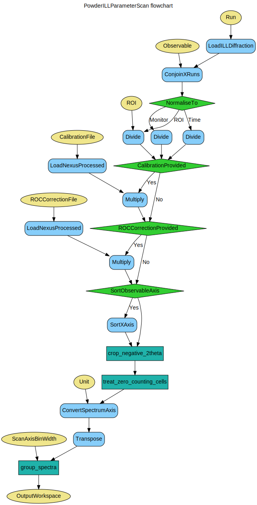

\(\renewcommand\AA{\unicode{x212B}}\)
PowderILLParameterScan v1¶
{kind=link}
PowderILLParameterScan dialog.¶
Summary¶
Performs powder diffraction data reduction for ILL instrument D20 and D1B.
See Also¶
Properties¶
Name |
Direction |
Type |
Default |
Description |
|---|---|---|---|---|
Run |
Input |
list of str lists |
Mandatory |
File path of run(s). Allowed values: [‘nxs’] |
CalibrationFile |
Input |
string |
File containing the detector efficiencies. Allowed values: [‘nxs’] |
|
ROCCorrectionFile |
Input |
string |
File containing the radial oscillating collimator (ROC) corrections. Allowed values: [‘nxs’] |
|
NormaliseTo |
Input |
string |
None |
Normalise to time, monitor or ROI counts. Allowed values: [‘None’, ‘Time’, ‘Monitor’, ‘ROI’] |
ROI |
Input |
dbl list |
0,153.6 |
Regions of interest for normalisation [in scattering angle in degrees]. |
Observable |
Input |
string |
sample.temperature |
Scanning observable, a Sample Log entry. |
SortObservableAxis |
Input |
boolean |
False |
Whether or not to sort the scanning observable axis. |
ScanAxisBinWidth |
Input |
number |
0 |
Rebin the observable axis to this width. Default is to not rebin. |
CropNegative2Theta |
Input |
boolean |
True |
Whether or not to crop out the bins corresponding to negative scattering angle. |
ZeroCountingCells |
Input |
string |
Interpolate |
Crop out the zero counting cells or interpolate the counts from the neighbours. Allowed values: [‘Crop’, ‘Interpolate’, ‘Leave’] |
Unit |
Input |
string |
ScatteringAngle |
The unit of the reduced diffractogram. Allowed values: [‘ScatteringAngle’, ‘MomentumTransfer’, ‘dSpacing’] |
OutputWorkspace |
Output |
Mandatory |
Output workspace containing the reduced data. |
Description¶
This algorithm performs the data reduction for D20 and D1B instruments at the ILL.
Input runs¶
Provide the list of the input runs (e.g. one .nxs file corresponding to a single temperature point) following the syntax in
MultipleFileProperty.
Summing of individual runs is possible, and if requested it will be carried out by MergeRuns, taking into account the metadata.
The list of unsummed files will be eventually combined with ConjoinXRuns.
Scanning observable¶
The scanning observable can be any numeric sample log entry (scalar or time series). It is possible to request ordering and/or equidistant rebinning of the observable axis for the final result.
Calibration file¶
This has to be a processed .nxs file containing a single-column workspace of calibration constants generated by PowderILLEfficiency, and then saved with SaveNexusProcessed.
Normalisation options¶
Choose one of the 4 options suggested. If region-of-interest (ROI) normalisation is requested, provide ROI as a list of ranges in scattering angle in degrees, for example 10,20,50,100 will mean [10-20] and [50-100].
Output¶
The output of the algorithm is a single workspace, one spectrum (diffractogram) per each observable (e.g. temperature) point. This algorithm does not save the output to a file itself. Use SaveFocusedXYE to save in FullProf format #10, or SaveGSS for GSAS format.
Workflow¶
Usage¶
Example - PowderILLParameterScan
red_ws = PowderILLParameterScan(Run='967087,967088')
print("Reduced workspace has {0} diffractograms having {1} bins each".format(red_ws.getNumberHistograms(),red_ws.blocksize()))
print("The first one corresponds to T={0:.2f} K".format(red_ws.getAxis(1).extractValues()[0]))
print("The first one corresponds to T={0:.2f} K".format(red_ws.getAxis(1).extractValues()[1]))
Output:
Reduced workspace has 2 diffractograms having 3008 bins each
The first one corresponds to T=253.92 K
The first one corresponds to T=242.82 K
Categories: AlgorithmIndex | ILL\Diffraction | Diffraction\Reduction
Source¶
Python: PowderILLParameterScan.py